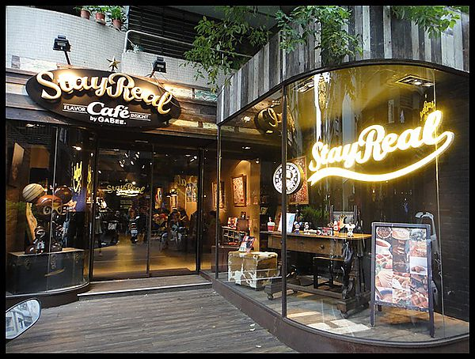
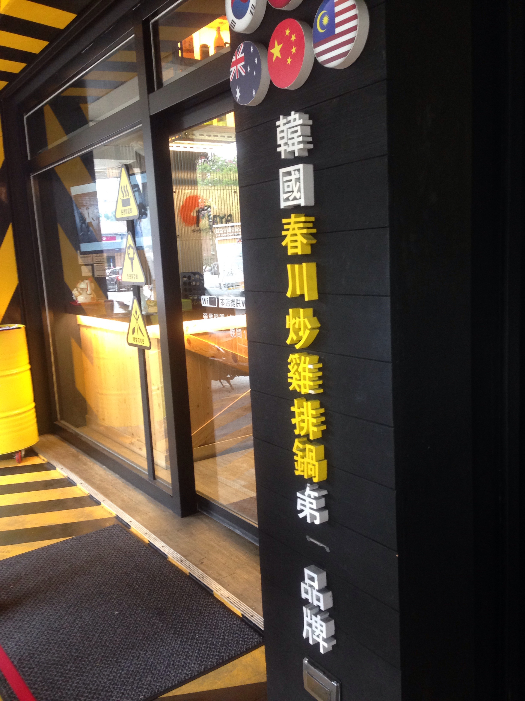
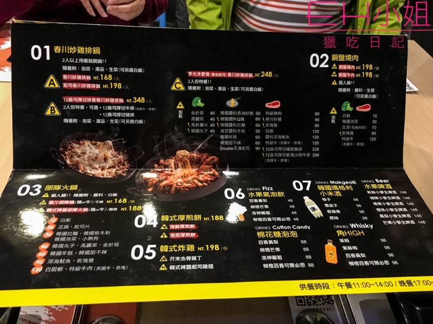
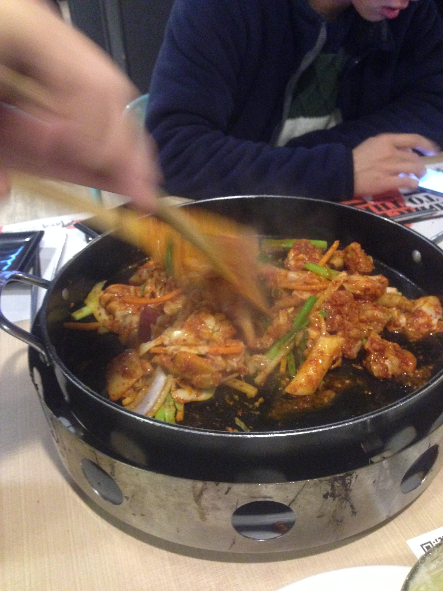
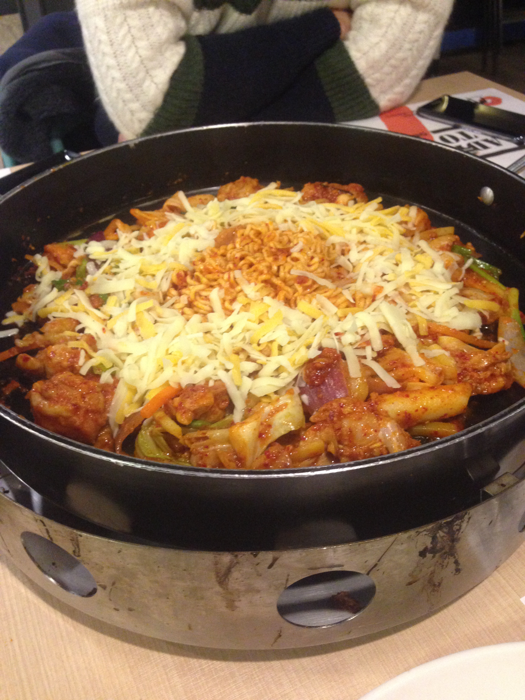
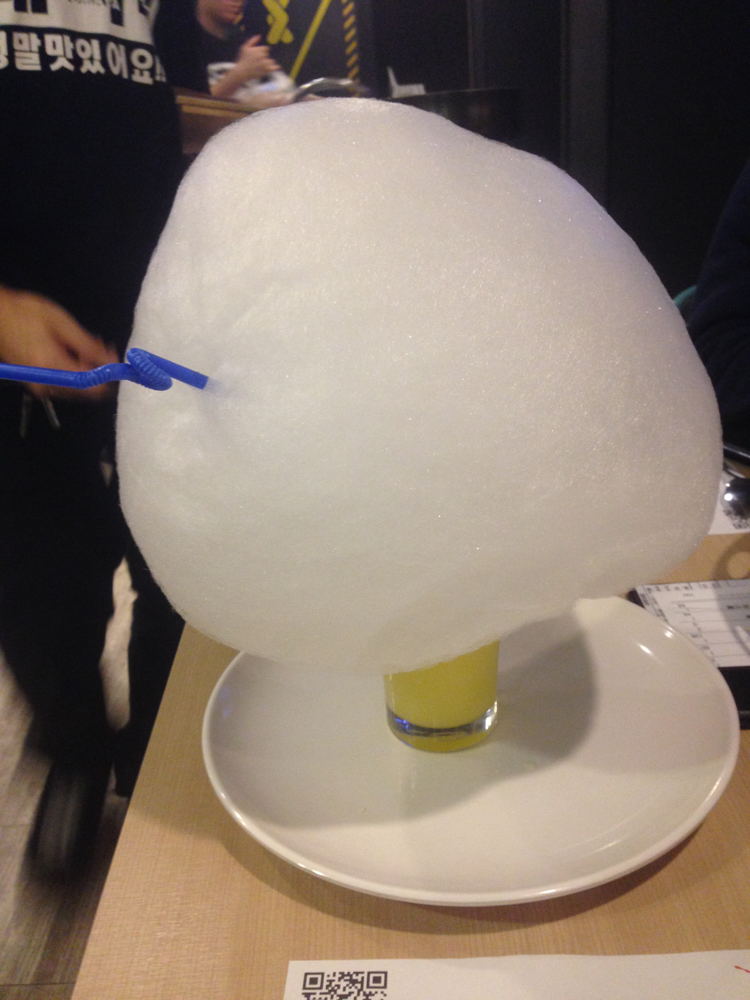
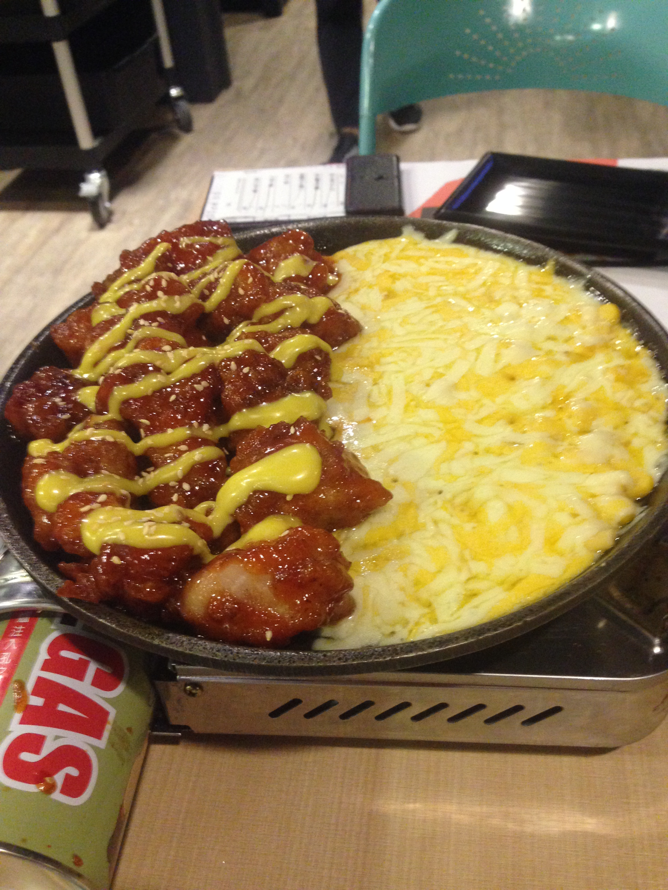

地點:台北市敦化南路一段177巷21號1樓
由五月天阿信和不二良共同創立的潮牌-STAY REAL
在東區開了一家咖啡廳~
最令我念念不忘的鬆餅就這是家了!
外酥內鬆軟的鬆餅,讓人吃完還會想吃!!
我有吃過香蕉巧克力和oreo巧克力口味
oreo好像有點太甜,香蕉的就剛剛好~!
可能跟個人口味偏好有關
覺得一般鬆厚的鬆餅吃多了會膩
這種花瓣鬆餅完全不會~
這個好像叫 "咖哩燻雞"
也是很好吃,不會太鹹味道也很夠
還有附上一小碗的沙拉,搭著吃好吃健康~
還有他的三明治搭配薯條
旁邊還有放上洋芋片~
基本上我點到的都很好吃~價錢也中等
沒有地雷,個人覺得cp值超高的一家咖啡廳~!!
這家我是吃台中分店
2/26~選在連假前平日中午去吃的,還排了2.30分鐘
由此可知假日人潮有多可怕!
地點:台中市豐原區中正路290號
板橋也有新開分店了~
地點:新北市板橋區實踐路30號
這是他的菜單
因為忘記拍菜單了,所以這是去網路上找的圖
他的餐點名字有一個最吸引我的地方~~
李光洙愛情!!!
身為一個running man迷怎麼能不被這道菜的名字所吸引呢!!
可惜同行的朋友不想點,所以我們最後決定點 春川炒雞排鍋B
這是他在幫我們炒的過程
完成後在上面鋪上一大層的起司~~~~看起來超美味的!!
之後再給他悶一下讓起司融化
吃的時候真的會牽絲!可惜沒拍到照片阿~XD
喜歡吃辣的朋友可以試試,但對我來講好像稍微有點太辣了QAO
但是吃到最後冷掉時反而很膩
適合熱熱吃~
在外面排隊時就看到裡面有人點了這一大杯
棉花糖泡泡
底下有一個大盤子,可以先讓你把棉花糖放著慢慢吃
一開始還沒發現盤子的用途還嫌她佔位XD
不過喝了之後發現就只是個噱頭
棉花糖+氣泡飲料
看起來很特別而已~
然後我們還點了韓式炸雞
來到這種地方怎麼能不點炸雞呢~
自從來自星星的你撥出後韓式炸雞整個在台灣掀起一陣風潮
也是一大堆的起司
上面淋上黃芥末醬
一樣是要趁熱吃才好吃~
點了一大鍋炒雞加炸雞三個人吃份量算是很夠了
個人覺得是還OK不算難吃
但要是讓我排1.2個小時的隊可能就不會想吃了XD